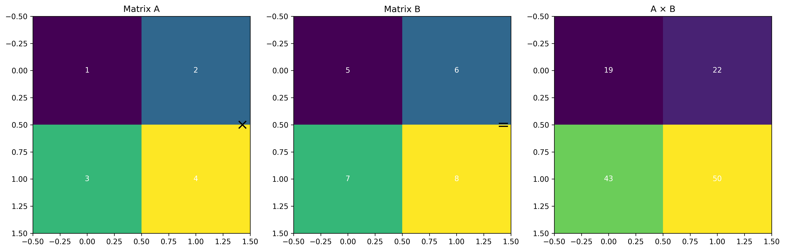

1 Matrix Multiplication: The Building Block of Deep Learning

Matrix Multiplication Visualization
In this post, we’ll explore matrix multiplication from first principles, following Jeremy Howard’s excellent teaching approach from the FastAI course. We’ll understand why it’s crucial for deep learning and implement it from scratch in Python.
1.1 Why Matrix Multiplication Matters
Matrix multiplication is fundamental to deep learning because:
It’s the core operation in neural network layers
It enables efficient parallel computation
It allows us to represent complex transformations compactly
1.2 Implementation from Scratch
Let’s implement matrix multiplication using Python and NumPy:
import numpy as npimport torchfrom typing import List, Tupleimport matplotlib.pyplot as pltdef matmul(a: List[List[float]], b: List[List[float]]) -> List[List[float]]:"""Matrix multiplication from scratch"""# Check dimensionsassertlen(a[0]) ==len(b), "Incompatible dimensions"# Initialize result matrix result = [[0.0for _ inrange(len(b[0]))] for _ inrange(len(a))]# Perform multiplicationfor i inrange(len(a)):for j inrange(len(b[0])):for k inrange(len(b)): result[i][j] += a[i][k] * b[k][j]return result# Example matricesA = [[1, 2], [3, 4]]B = [[5, 6], [7, 8]]# Calculate resultresult = matmul(A, B)print("Result of matrix multiplication:")print(np.array(result))
Result of matrix multiplication:
[[19. 22.]
[43. 50.]]
1.3 Visualizing Matrix Multiplication
Let’s create a visual representation of how matrix multiplication works:
def plot_matrix_mult(A: np.ndarray, B: np.ndarray) ->None:"""Visualize matrix multiplication process""" fig, (ax1, ax2, ax3) = plt.subplots(1, 3, figsize=(15, 5))# Plot first matrix ax1.imshow(A, cmap='viridis') ax1.set_title('Matrix A')# Plot second matrix ax2.imshow(B, cmap='viridis') ax2.set_title('Matrix B')# Plot result result = np.dot(A, B) ax3.imshow(result, cmap='viridis') ax3.set_title('A × B') plt.tight_layout() plt.show()# Create example matricesA = np.array([[1, 2], [3, 4]])B = np.array([[5, 6], [7, 8]])plot_matrix_mult(A, B)
1.4 PyTorch Implementation
In practice, we use optimized libraries like PyTorch:
Matrix multiplication is a fundamental operation in deep learning
Understanding it from first principles helps debug neural networks
Libraries like PyTorch provide highly optimized implementations
The operation is inherently parallelizable
FastAI Insight
Jeremy Howard emphasizes understanding matrix multiplication from scratch because it’s the foundation of neural network operations. This understanding helps in debugging and optimizing deep learning models.
1.7 Next Steps
In future posts, we’ll explore: - How matrix multiplication enables neural network layers - Efficient implementations using CUDA - Common optimization techniques
---title: "Understanding Matrix Multiplication from FastAI"subtitle: "A Deep Dive into Neural Network Fundamentals"author: "Hasan Goni"date: "2023-11-20"categories: [deep-learning, mathematics, fastai]tags: [matrix-multiplication, neural-networks, pytorch, numpy, mathematics]image: "matrix_mult.png"jupyter: python3format: html: code-fold: false---::: {.callout-note}## Related ContentThis post is part of our deep learning foundations series. You might also be interested in:- [Data Science Steps Series](/posts/series/data-science-steps)- [Feature Preprocessing](/posts/data-science-steps-to-follow-part02):::# Matrix Multiplication: The Building Block of Deep LearningIn this post, we'll explore matrix multiplication from first principles, following Jeremy Howard's excellent teaching approach from the FastAI course. We'll understand why it's crucial for deep learning and implement it from scratch in Python.## Why Matrix Multiplication MattersMatrix multiplication is fundamental to deep learning because:1. It's the core operation in neural network layers2. It enables efficient parallel computation3. It allows us to represent complex transformations compactly## Implementation from ScratchLet's implement matrix multiplication using Python and NumPy:```{python}import numpy as npimport torchfrom typing import List, Tupleimport matplotlib.pyplot as pltdef matmul(a: List[List[float]], b: List[List[float]]) -> List[List[float]]:"""Matrix multiplication from scratch"""# Check dimensionsassertlen(a[0]) ==len(b), "Incompatible dimensions"# Initialize result matrix result = [[0.0for _ inrange(len(b[0]))] for _ inrange(len(a))]# Perform multiplicationfor i inrange(len(a)):for j inrange(len(b[0])):for k inrange(len(b)): result[i][j] += a[i][k] * b[k][j]return result# Example matricesA = [[1, 2], [3, 4]]B = [[5, 6], [7, 8]]# Calculate resultresult = matmul(A, B)print("Result of matrix multiplication:")print(np.array(result))```## Visualizing Matrix MultiplicationLet's create a visual representation of how matrix multiplication works:```{python}def plot_matrix_mult(A: np.ndarray, B: np.ndarray) ->None:"""Visualize matrix multiplication process""" fig, (ax1, ax2, ax3) = plt.subplots(1, 3, figsize=(15, 5))# Plot first matrix ax1.imshow(A, cmap='viridis') ax1.set_title('Matrix A')# Plot second matrix ax2.imshow(B, cmap='viridis') ax2.set_title('Matrix B')# Plot result result = np.dot(A, B) ax3.imshow(result, cmap='viridis') ax3.set_title('A × B') plt.tight_layout() plt.show()# Create example matricesA = np.array([[1, 2], [3, 4]])B = np.array([[5, 6], [7, 8]])plot_matrix_mult(A, B)```## PyTorch ImplementationIn practice, we use optimized libraries like PyTorch:```{python}# Convert to PyTorch tensorsA_torch = torch.tensor(A, dtype=torch.float32)B_torch = torch.tensor(B, dtype=torch.float32)# PyTorch matrix multiplicationresult_torch = torch.matmul(A_torch, B_torch)print("PyTorch result:")print(result_torch)```## Performance ComparisonLet's compare our implementation with NumPy and PyTorch:```{python}import timedef benchmark_matmul(size: int=100) ->None:"""Compare performance of different implementations"""# Generate random matrices A = np.random.randn(size, size) B = np.random.randn(size, size)# Custom implementation start = time.time() _ = matmul(A.tolist(), B.tolist()) custom_time = time.time() - start# NumPy start = time.time() _ = np.dot(A, B) numpy_time = time.time() - start# PyTorch A_torch = torch.tensor(A) B_torch = torch.tensor(B) start = time.time() _ = torch.matmul(A_torch, B_torch) torch_time = time.time() - startprint(f"Custom implementation: {custom_time:.4f}s")print(f"NumPy: {numpy_time:.4f}s")print(f"PyTorch: {torch_time:.4f}s")benchmark_matmul()```## Key Takeaways1. Matrix multiplication is a fundamental operation in deep learning2. Understanding it from first principles helps debug neural networks3. Libraries like PyTorch provide highly optimized implementations4. The operation is inherently parallelizable::: {.callout-tip}## FastAI InsightJeremy Howard emphasizes understanding matrix multiplication from scratch because it's the foundation of neural network operations. This understanding helps in debugging and optimizing deep learning models.:::## Next StepsIn future posts, we'll explore:- How matrix multiplication enables neural network layers- Efficient implementations using CUDA- Common optimization techniques## Related Posts- [Data Science Steps Series](/posts/series/data-science-steps)- [Feature Preprocessing](/posts/data-science-steps-to-follow-part02)- [Using Nougat for Research Papers](/posts/nougat-to-read-scientific-pdf-files)## References1. [FastAI Course](https://course.fast.ai/)2. [Deep Learning Book - Linear Algebra Chapter](https://www.deeplearningbook.org/contents/linear_algebra.html)3. [PyTorch Documentation](https://pytorch.org/docs/stable/torch.html#torch.matmul)